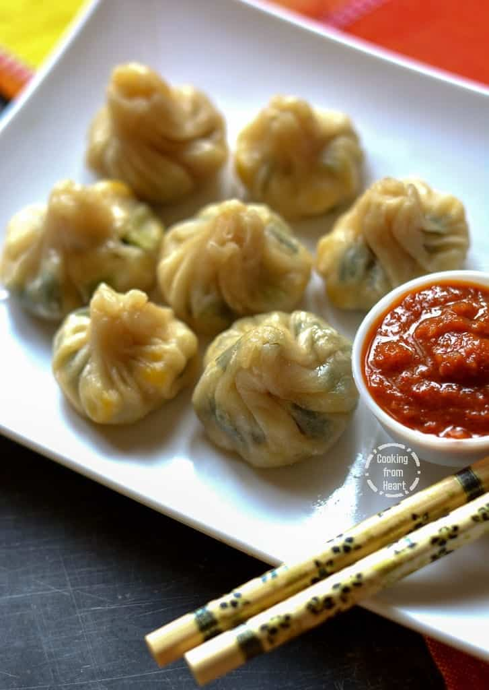

Recipe For Momos

Description:
AI Mode conversation: momos description in englishmomos description in englishMomos are native South Asian dumplings made by wrapping a thin all-purpose flour dough wrapper around a seasoned filling. Originating in Tibet, they are traditionally packed into round "potli" pouch or crescent shapes, steamed until soft, and served alongside a fiery red chilli chutney. Fillings commonly feature minced meats, spiced vegetables, or grated paneer.
Ingredients
- 2 cups all-purpose flour
- 1 cup finely chopped cabbage
- 1/2 cup grated carrot
- 1/2 cup finely chopped onion
- 2 cloves garlic, minced
- 1 teaspoon grated ginger
- 1 teaspoon soy sauce
- 1/2 teaspoon black pepper
- Salt to taste
- Water as needed
Steps
- Prepare a soft dough using flour, water, and a pinch of salt.
- Mix the chopped vegetables, garlic, ginger, soy sauce, salt, and pepper.
- Let the dough rest for about 20 minutes.
- Roll the dough into thin circles.
- Place a spoonful of filling in the center of each wrapper.
- Fold and seal the edges to form momos.
- Steam the momos for 10–12 minutes until fully cooked.
- Serve hot with spicy momos chutney.
Enjoy The Amazing Food!!